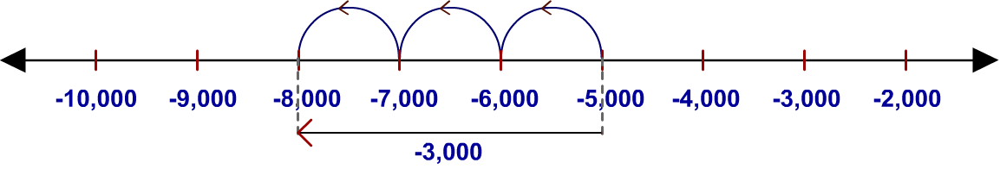
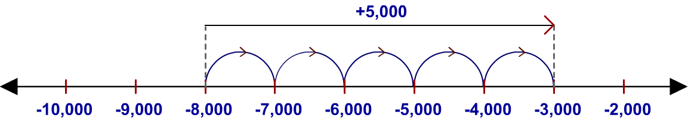

Juanita, a college student, currently owes her parents $8,000 for educational loans.On her birthday, her father announces that he has had a wonderful year in his business and that he will celebrate by reducing by $5,000, the money that Juanita currently owes her
parents.
Juanita thinks to herself, “This is just as good as if he had just
handed me a check for $5,000!”
– $8,000 – (–$5,000) = – $8,000 + $5,000
= – $3,000
Juanita now owes her parents only $3,000.
– 8,000 – (– 5,000 ) = – 8000 + (5000)
= – [8000 – 5000]
= – 3000
(– 5000 – 3000) = – 8000
Starting at -5,000 , move 3000 towards left and reach at
-8,000.

Examine the addition problem – 8,000 + 5,000 = ?. This is illustrated below.
Starting at – 8,000, move 5,000 towards right.

From the picture it is clear that the answer is – 3,000.
Subtraction with integers is often used to find the change in value between two readings of measurements such as temperatures, altitudes, and distances.
It is also used to find changes in dollar values such as profit, net worth, or market value.
To calculate the change between two integer values,including directions (positive for up and negative for down), we first identify the ‘beginning value’ and the ‘final value’, and then subtract using the following rule :
Change in value = ‘the final value’ – ‘the initial value’.
For example, in the morning of a winter day, within two hours the temperature at a particular place dropped from a high of 22°F above zero to a low of 8°F below zero.
The change in the temperature can be obtained as follows :
|
|
|
|
|
| The final temperature |
minus |
the beginning temperature |
= |
change in temperature |
| – 8°F |
– |
(+ 22°F) |
= |
– 8 + (– 22) |
| |
|
|
= |
– 30°F |
| below zero means negative |
|
above zero means positive |
|
negative means drop |
The change was –30°F, which means the temperature dropped by 30°F.